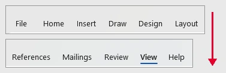
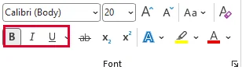

<!doctype html>
<html lang="ro">
<head>
<meta charset="utf-8">
<meta name="viewport" content="width=device-width, initial-scale=1, viewport-fit=cover">
<title>Antrenament: Word</title>
<meta name="description" content="Antrenament pentru clasa a VII-a: întrebări trase la întâmplare despre editorul de texte, pe trei runde (De bază, Consolidat, Avansat), altele la fiecare reluare.">
<link rel="preconnect" href="https://fonts.googleapis.com">
<link rel="preconnect" href="https://fonts.gstatic.com" crossorigin>
<link rel="stylesheet" href="https://fonts.googleapis.com/css2?family=Bitter:wght@600;700;800&family=Lexend:wght@400;600;700&family=Martian+Mono:wght@400;600&display=swap">
<link rel="stylesheet" href="../_motor/motor.css">
<style>
:root{
  --desk:#EEEAE1; --paper:#FFFDF8; --paper2:#F6F1E6; --line:#DCD2BF;
  --ink:#221D14; --ink2:#6A604D; --accent:#7A5200; --accentInk:#FFFFFF; --sel:#F3E2B8;
  --mark:#BDEBF2; --markInk:#1B2426; --ok:#1E6B3A; --okbg:#E3F1E6; --bad:#B3261E; --badbg:#FBE5E1;
  --fd:"Bitter",Georgia,"Times New Roman",serif; --fb:"Lexend","Segoe UI",system-ui,sans-serif; --fm:"Martian Mono",Consolas,monospace;
}
@media (prefers-color-scheme:dark){:root:not([data-theme="light"]){
  --desk:#15130F; --paper:#1F1C16; --paper2:#29251D; --line:#3D372B; --ink:#F1EADB; --ink2:#B9AE98;
  --accent:#E8B64A; --accentInk:#1A1508; --sel:#4A3A17; --mark:#7FD3E0; --markInk:#10201F;
  --ok:#7ACB93; --okbg:#16301F; --bad:#FF8C7F; --badbg:#3A1C18;
}}
:root[data-theme="dark"]{
  --desk:#15130F; --paper:#1F1C16; --paper2:#29251D; --line:#3D372B; --ink:#F1EADB; --ink2:#B9AE98;
  --accent:#E8B64A; --accentInk:#1A1508; --sel:#4A3A17; --mark:#7FD3E0; --markInk:#10201F;
  --ok:#7ACB93; --okbg:#16301F; --bad:#FF8C7F; --badbg:#3A1C18;
}
/* tema: fâșia de sus arată un rând de document cu semnele de formatare pornite (¶ și punctele spațiilor),
   cu deviza profesorului; semnul ¶ și săgeata de Tab în culoarea accentului */
.banda{display:flex;align-items:center;gap:0;min-height:30px;padding:0 14px;font-family:var(--fm);font-size:.68rem;color:var(--ink2);white-space:nowrap;
  background:linear-gradient(var(--paper2),var(--paper2)) padding-box;border-bottom:1px dashed var(--accent)}
.banda .pm{color:var(--accent);font-weight:600;padding:0 .15em}
.banda .dt{opacity:.55}
h1{font-weight:800;letter-spacing:-.02em}
h1 em{font-style:normal;color:var(--accent);box-shadow:inset 0 -.18em 0 var(--mark)}
h2{font-weight:700}
</style>
</head>
<body>
<script src="../_motor/motor.js"></script>
<script src="../_ghiduri/docs/pasi.js"></script>
<script>
/*@@PAGINA_START@@*/
/* COPIE din jocuri/word-obiecte-vii (15.09.2026), doar culorile foii schimbate; candidat pentru _motor/tip-pagina.js.
   Tipul de întrebare „pagina”: elevul așază o pagină (orientare, margini, încadrarea imaginii, structura tabelului)
   după o specificație și vede foaia pe loc.
   Întrebare: {t:'pagina', q, why, parti:['orientare','margini','imagine','tabel'], imbinare?:true,
               cere:{orientare?, marg?:[min,max], stangaMaiMare?, incadrare?:[moduri acceptate], incadrareCe?,
                     tabel?:{cap:[...], date:[[...]], titlu?, latCol?:cm}}, start?:{...}}
   Verificare pe COMPORTAMENT: lățimea tabelului (coloane × lățimea unei coloane) se compară cu lățimea foii minus
   marginile alese; rândurile necesare se numără din date + antet + rândul îmbinat; marginile se compară cu intervalul.
   Nu există o soluție memorată: rezolvarea automată CAUTĂ o combinație care trece aceeași verificare,
   iar orice combinație care respectă specificația e acceptată. */
const JocPagina=(function(){
'use strict';
const MARG=[1,1.5,2,2.5,3,3.5];
const INC=[['aliniat','În linie cu textul'],['patrat','Pătrat'],['strans','Strâns'],['susjos','Sus și jos'],['spate','În spatele textului']];
const EFECT={aliniat:'imaginea stă în rând, ca o literă',patrat:'textul curge pe lângă imagine',strans:'textul curge pe lângă imagine, lipit de ea',
  susjos:'textul se oprește deasupra imaginii și continuă dedesubt',spate:'imaginea stă sub text, ca un fundal'};
const fmt=x=>String(Math.round(x*100)/100).replace('.',',');
const latime=o=>o==='peisaj'?29.7:21, inaltime=o=>o==='peisaj'?21:29.7;
const numeInc=k=>INC.find(x=>x[0]===k)[1];
const CSS=`.pg-wrap{display:flex;flex-direction:column;align-items:center;gap:6px;margin:0 0 14px}
.pg-sheet{position:relative;background:#FDFBFA;border:1px solid var(--line);box-shadow:0 2px 0 var(--line),0 8px 22px rgba(0,0,0,.08);overflow:hidden;container-type:inline-size}
.pg-sheet.portret{width:min(100%,240px);aspect-ratio:21/29.7}
.pg-sheet.peisaj{width:min(100%,400px);aspect-ratio:29.7/21}
.pg-area{position:absolute;outline:1px dashed #7A5200;display:flex;flex-direction:column;gap:2cqw}
.pg-tt{display:block;height:3.2cqw;width:55%;margin:0 auto .8cqw;background:#2E281C;border-radius:1px;flex:none}
.pg-ln{display:block;height:1.4cqw;background:#BDB39E;border-radius:1px;flex:none}
.pg-row{display:flex;align-items:center;gap:1.5cqw}
.pg-row .pg-ln{flex:1 1 auto}
.pg-img{display:block;flex:none;width:32%;aspect-ratio:4/3;border:1px solid #C9B48A;
  background:radial-gradient(circle at 72% 28%,#E0662B 0 9%,transparent 10%),linear-gradient(155deg,transparent 52%,#B07A1E 53%),linear-gradient(205deg,transparent 58%,#5E4410 59%),#F4E6C4}
.pg-img.sm{width:8%;aspect-ratio:1}
.pg-img.wide{width:100%;aspect-ratio:3/1}
.pg-side{display:flex;gap:2.4cqw;align-items:flex-start}
.pg-side.strans{gap:.7cqw}
.pg-col{flex:1;display:flex;flex-direction:column;gap:2cqw;min-width:0}
.pg-back{position:relative}
.pg-img.bg{position:absolute;top:0;bottom:0;left:18%;width:64%;aspect-ratio:auto;opacity:.33}
.pg-back .pg-col{position:relative}
.pg-tb{border-collapse:collapse;table-layout:fixed;font:2cqw/1.15 Arial,"Segoe UI",sans-serif;color:#2A2418;flex:none;align-self:flex-start}
.pg-tb td{border:1px solid #6E6450;padding:.3cqw .5cqw;overflow:hidden;white-space:nowrap;height:3.4cqw}
.pg-tb td.hd{background:#EFE0BD;font-weight:700}
.pg-tb td.mg{text-align:center;font-weight:700;background:#E3CD98}
.pg-tb.over{outline:2px solid #D92D20}
.pg-cap{font-family:var(--fm);font-size:.72rem;color:var(--ink2);text-align:center;overflow-wrap:anywhere}
.pg-zoom{width:100%;overflow-x:auto;margin:0 0 14px}
.pg-zt{border-collapse:collapse;width:100%;font-size:.86rem;line-height:1.25}
.pg-zt td{border:1px solid var(--ink2);padding:4px 6px;overflow-wrap:anywhere;min-width:2.2em;height:2em}
.pg-zt td.hd{background:var(--sel);font-weight:700}
.pg-zt td.mg{background:var(--sel);font-weight:700;text-align:center;box-shadow:inset 0 -2px 0 var(--accent)}
.pg-zt tr.gol td{background:repeating-linear-gradient(135deg,transparent 0 5px,var(--paper2) 5px 10px)}
.pg-ctl{display:grid;gap:12px}
.pg-opts{display:flex;flex-wrap:wrap;gap:6px;align-items:center}
.pg-b{padding:6px 10px;border:1px solid var(--line);border-radius:6px;background:var(--paper2);font-size:.9rem;line-height:1.2;min-height:38px}
.pg-b.on{border-color:var(--accent);box-shadow:inset 0 0 0 2px var(--accent);font-weight:600}
.pg-step{display:inline-flex;align-items:center;gap:6px;margin-right:12px}
.pg-step .pg-b{min-width:38px;font-weight:700}
.pg-step output{font-family:var(--fm);min-width:1.4em;text-align:center;font-weight:600}`;

function parti(Q){return Q.parti||[]}
function arataImbinare(Q){const T=Q.cere.tabel;return parti(Q).includes('tabel')&&!!(Q.imbinare||(T&&T.titlu))}
function init(Q){
  const T=Q.cere.tabel,P=parti(Q);
  const s=Object.assign({or:'portret',ms:2,md:2,inc:'aliniat',r:2,c:2,antet:false,imb:false},Q.start||{});
  if(T&&!P.includes('tabel')){s.c=T.cap.length;s.antet=T.antet!==false;s.imb=!!T.titlu;s.r=T.date.length+(s.antet?1:0)+(s.imb?1:0)}
  if(Q.cere.incadrare&&!P.includes('imagine'))s.inc=Q.cere.incadrare[0];
  return s;
}
function problems(Q,s){
  const C=Q.cere,T=C.tabel,out=[];
  if(C.orientare&&s.or!==C.orientare)out.push(`Specificația cere foaia ${C.orientare==='peisaj'?'culcată (vedere)':'în picioare (portret)'}.`);
  if(C.marg){const[a,b]=C.marg;if(s.ms<a||s.ms>b||s.md<a||s.md>b)out.push(`Marginile trebuie să fie între ${fmt(a)} și ${fmt(b)} cm. Acum ai stânga ${fmt(s.ms)} cm și dreapta ${fmt(s.md)} cm.`)}
  if(C.stangaMaiMare&&!(s.ms>s.md))out.push('Lucrarea se îndosariază: marginea din stânga trebuie să fie mai mare decât cea din dreapta, ca găurile să nu prindă textul.');
  if(T&&T.latCol){const need=s.c*T.latCol,avail=latime(s.or)-s.ms-s.md;
    if(need>avail+1e-9)out.push(`Tabelul are nevoie de ${fmt(need)} cm pe lățime, dar între margini au rămas doar ${fmt(avail)} cm (${fmt(latime(s.or))} − ${fmt(s.ms)} − ${fmt(s.md)}). Nimic nu iese în afara marginilor.`)}
  if(C.incadrare&&!C.incadrare.includes(s.inc))out.push(`Acum ${EFECT[s.inc]}. Specificația cere altceva: ${C.incadrareCe}.`);
  if(T){
    if(s.c!==T.cap.length)out.push(`Fiecare rând are ${T.cap.length} informații (${T.cap.join(', ')}), deci tabelul are nevoie de tot atâtea coloane. Acum are ${s.c}.`);
    if(T.antet!==false&&!s.antet)out.push('Lipsește rândul de antet: fără el, cititorul nu știe ce e în fiecare coloană.');
    if(T.titlu&&!s.imb)out.push(`Titlul „${T.titlu}” trebuie să stea deasupra tuturor coloanelor, pe un rând cu celulele îmbinate.`);
    if(!T.titlu&&s.imb)out.push('Ai îmbinat celulele primului rând, dar tabelul nu are un titlu comun.');
    const need=T.date.length+(s.antet?1:0)+(s.imb?1:0);
    if(s.r<need)out.push(`Nu încap toate datele: ${need-s.r===1?'un rând rămâne':(need-s.r)+' rânduri rămân'} pe dinafară.`);
    else if(s.r>need)out.push(`Tabelul are ${s.r-need===1?'un rând gol':(s.r-need)+' rânduri goale'} la final. Un tabel îngrijit nu are rânduri goale.`);
  }
  return out;
}
function solution(Q){
  const P=parti(Q),b=init(Q),has=k=>P.includes(k),M=[2,2.5,3,1.5,3.5,1];
  const dom={or:has('orientare')?['portret','peisaj']:[b.or],ms:has('margini')?M:[b.ms],md:has('margini')?M:[b.md],
    inc:has('imagine')?INC.map(x=>x[0]):[b.inc],r:has('tabel')?[1,2,3,4,5,6,7,8,9]:[b.r],c:has('tabel')?[1,2,3,4,5,6]:[b.c],
    antet:has('tabel')?[true,false]:[b.antet],imb:arataImbinare(Q)?[false,true]:[b.imb]};
  const keys=Object.keys(dom),s={...b};
  function rec(i){if(i===keys.length)return problems(Q,s).length?null:{...s};
    for(const v of dom[keys[i]]){s[keys[i]]=v;const r=rec(i+1);if(r)return r}return null}
  const sol=rec(0);
  if(!sol)throw new Error('JocPagina: specificația nu are nicio soluție');
  return sol;
}
function describe(Q,s){
  const P=parti(Q),T=Q.cere.tabel,parts=[];
  if(P.includes('orientare'))parts.push(`foaia ${s.or}`);
  if(P.includes('margini'))parts.push(`margini de ${fmt(s.ms)} cm în stânga și ${fmt(s.md)} cm în dreapta`);
  if(P.includes('imagine'))parts.push(`încadrarea „${numeInc(s.inc)}”`);
  if(P.includes('tabel')&&T)parts.push(`tabel cu ${s.r} rânduri și ${s.c} coloane, rând de antet${s.imb?' și primul rând cu celulele îmbinate':''}`);
  return 'o variantă bună e acum pe foaie: '+parts.join('; ')+'.';
}

function render(Q,body,api){
  if(!document.getElementById('tip-pagina-css')){const st=document.createElement('style');st.id='tip-pagina-css';st.textContent=CSS;document.head.appendChild(st)}
  const esc=api.esc,P=parti(Q),has=k=>P.includes(k),T=Q.cere.tabel,s=init(Q);
  const showImg=has('imagine')||!!Q.cere.incadrare;
  function randuri(){
    const rows=[];
    if(s.imb)rows.push({mg:T.titlu||''});
    if(s.antet)rows.push({cells:T.cap,hd:true});
    T.date.forEach(d=>rows.push({cells:d}));
    const shown=rows.slice(0,s.r);
    while(shown.length<s.r)shown.push({cells:[],gol:true});
    return shown;
  }
  function tabel(cls,style){
    return `<table class="${cls}" ${style?`style="${style}"`:''}>${randuri().map(r=>r.mg!==undefined
      ?`<tr><td colspan="${s.c}" class="mg">${esc(r.mg)}</td></tr>`
      :`<tr class="${r.gol?'gol':''}">${Array.from({length:s.c},(_,k)=>`<td class="${r.hd?'hd':''}">${esc(r.cells[k]||'')}</td>`).join('')}</tr>`).join('')}</table>`;
  }
  function foaia(){
    const W=latime(s.or),H=inaltime(s.or),top=2/H*100,left=s.ms/W*100,right=s.md/W*100;
    const ln=w=>`<i class="pg-ln" style="width:${w}%"></i>`,lines=n=>Array.from({length:n},(_,k)=>ln([100,93,97,68][k%4])).join('');
    let c='<i class="pg-tt"></i>';
    if(showImg){
      if(s.inc==='aliniat')c+=`<div class="pg-row">${ln(30)}<b class="pg-img sm"></b>${ln(40)}</div>`+lines(3);
      else if(s.inc==='patrat'||s.inc==='strans')c+=`<div class="pg-side ${s.inc}"><b class="pg-img"></b><div class="pg-col">${lines(4)}</div></div>`+lines(1);
      else if(s.inc==='susjos')c+=lines(1)+'<b class="pg-img wide"></b>'+lines(2);
      else c+=`<div class="pg-back"><b class="pg-img bg"></b><div class="pg-col">${lines(5)}</div></div>`;
    }else c+=lines(3);
    if(T){
      const avail=W-s.ms-s.md,pct=T.latCol?s.c*T.latCol/avail*100:100;
      c+=tabel('pg-tb'+(pct>100.01?' over':''),`width:${pct.toFixed(2)}%`);
    }
    return `<div class="pg-wrap"><div class="pg-sheet ${s.or}" role="img" aria-label="Foaia A4 ${s.or}, cu marginea din stânga de ${fmt(s.ms)} cm și cea din dreapta de ${fmt(s.md)} cm">
      <div class="pg-area" style="top:${top.toFixed(2)}%;bottom:${top.toFixed(2)}%;left:${left.toFixed(2)}%;right:${right.toFixed(2)}%">${c}</div></div>
      <div class="pg-cap">A4 ${s.or} · lățime ${fmt(W)} cm · margini: stânga ${fmt(s.ms)}, dreapta ${fmt(s.md)}${T&&T.latCol?` · loc pentru text: ${fmt(W-s.ms-s.md)} cm`:''}</div></div>`;
  }
  const grp=(label,html)=>`<div><div class="lbl">${label}</div><div class="pg-opts">${html}</div></div>`;
  const btn=(key,val,label)=>`<button type="button" class="pg-b ${s[key]===val?'on':''}" data-${key}="${val}" aria-pressed="${s[key]===val}">${label}</button>`;
  const step=(key,label)=>`<span class="pg-step"><span>${label}</span><button type="button" class="pg-b" data-st="${key}" data-d="-1" aria-label="${label}: unul mai puțin">−</button><output data-val="${key}">${s[key]}</output><button type="button" class="pg-b" data-st="${key}" data-d="1" aria-label="${label}: unul în plus">+</button></span>`;
  const tog=(key,label)=>`<button type="button" class="pg-b ${s[key]?'on':''}" data-tg="${key}" aria-pressed="${s[key]}">${label}: ${s[key]?'da':'nu'}</button>`;
  function draw(){
    body.innerHTML=foaia()
      +(has('tabel')?`<div class="lbl">Tabelul, mărit</div><div class="pg-zoom">${tabel('pg-zt')}</div>`:'')
      +`<div class="pg-ctl">
        ${has('orientare')?grp('Orientarea foii',btn('or','portret','Portret')+btn('or','peisaj','Vedere (peisaj)')):''}
        ${has('margini')?grp('Marginea din stânga (cm)',MARG.map(m=>btn('ms',m,fmt(m))).join(''))+grp('Marginea din dreapta (cm)',MARG.map(m=>btn('md',m,fmt(m))).join('')):''}
        ${has('imagine')?grp('Încadrarea textului față de imagine',INC.map(([k,n])=>btn('inc',k,n)).join('')):''}
        ${has('tabel')?grp('Structura tabelului',step('r','Rânduri')+step('c','Coloane'))+grp('Rânduri speciale',tog('antet','Rând de antet')+(arataImbinare(Q)?tog('imb','Primul rând cu celulele îmbinate'):'')):''}
      </div>`;
    body.querySelectorAll('[data-or]').forEach(b=>b.onclick=()=>{if(api.done())return;s.or=b.dataset.or;draw()});
    body.querySelectorAll('[data-ms]').forEach(b=>b.onclick=()=>{if(api.done())return;s.ms=+b.dataset.ms;draw()});
    body.querySelectorAll('[data-md]').forEach(b=>b.onclick=()=>{if(api.done())return;s.md=+b.dataset.md;draw()});
    body.querySelectorAll('[data-inc]').forEach(b=>b.onclick=()=>{if(api.done())return;s.inc=b.dataset.inc;draw()});
    body.querySelectorAll('[data-st]').forEach(b=>b.onclick=()=>{if(api.done())return;const k=b.dataset.st,max=k==='r'?9:6;s[k]=Math.min(max,Math.max(1,s[k]+ +b.dataset.d));draw()});
    body.querySelectorAll('[data-tg]').forEach(b=>b.onclick=()=>{if(api.done())return;const k=b.dataset.tg;s[k]=!s[k];draw()});
  }
  draw();
  const nav=api.checkButton(()=>{
    const pr=problems(Q,s);
    if(!pr.length){nav.innerHTML='';api.resolve(true)}
    else{api.resolve(false,pr.slice(0,2).join(' ')+(pr.length>2?` (mai sunt ${pr.length-2})`:''));
      api.revealButton(()=>{Object.assign(s,solution(Q));draw();nav.innerHTML='';api.giveUp(describe(Q,s))})}
  });
}
function rezolva(Q,body){aplica(Q,body,solution(Q))}
/* greșeala tipică a copilului, pornind de la o foaie altfel corectă: uită să numere rândul de antet/titlu,
   lasă foaia pe portret („orientarea obișnuită”) sau pune margini egale la o lucrare de îndosariat.
   Se alege prima greșeală pe care verificarea chiar o respinge (poarta cere apoi „Nu încă”). */
function gresit(Q,body){
  const sol=solution(Q),P=parti(Q),cand=[];
  if(P.includes('tabel'))cand.push({...sol,r:sol.r-1});
  if(P.includes('orientare'))cand.push({...sol,or:'portret'});
  if(P.includes('margini'))cand.push({...sol,ms:2,md:2},{...sol,ms:1,md:1});
  if(P.includes('imagine'))cand.push({...sol,inc:'patrat'});
  const g=cand.find(s=>problems(Q,s).length);
  if(!g)throw new Error('JocPagina: nu am găsit o greșeală tipică pentru această întrebare');
  aplica(Q,body,g);
}
function aplica(Q,body,sol){
  const P=parti(Q),q=sel=>body.querySelector(sel);
  if(P.includes('orientare'))q(`[data-or="${sol.or}"]`).click();
  if(P.includes('margini')){q(`[data-ms="${sol.ms}"]`).click();q(`[data-md="${sol.md}"]`).click()}
  if(P.includes('imagine'))q(`[data-inc="${sol.inc}"]`).click();
  if(P.includes('tabel')){
    ['r','c'].forEach(k=>{for(let i=0;i<20;i++){const cur=+q(`[data-val="${k}"]`).textContent;if(cur===sol[k])break;q(`[data-st="${k}"][data-d="${cur<sol[k]?1:-1}"]`).click()}});
    ['antet','imb'].forEach(k=>{const t=q(`[data-tg="${k}"]`);if(t&&(t.getAttribute('aria-pressed')==='true')!==sol[k])t.click()});
  }
}
return {render,rezolva,gresit,problems,solution};
})();
/*@@PAGINA_END@@*/

/* Acoperirea programei (OMEN 3393/2017, domeniul „Editor de texte”), textul EXACT din curriculum.json. */
const PROG={
  interfata:'Interfaţa unei aplicaţii de realizare a documentelor',
  instrumente:'Instrumente de bază ale unei aplicații de realizare a documentelor',
  gestionare:'Operații pentru gestionarea unui document: creare, deschidere, vizualizare, salvare, închidere',
  obiecte:'Obiecte într-un document: text, imagini, tabele',
  editare:'Operaţii de editare într-un document: copiere, mutare, ștergere',
  formatare:'Operaţii de formatare a unui document: text, imagine, tabel, pagină',
  reguli:'Reguli generale de tehnoredactare şi estetică a paginii tipărite',
  specificatii:'Reguli de lucru în realizarea unui document conform unor specificații (dimensiune pagină, dimensiune font, dimensiune imagine, format tabel)'
};

/* ---------------- Runda 1: De bază ----------------
   Descriptorul (CS.1.1 / CS.3.1): cu sprijin, elemente de bază (text, imagini, caractere, paragrafe),
   editare de bază, pași ghidați, contexte familiare. Aici: recunoaștere, o singură idee pe întrebare, pași scriși. */
const BAZA=[
 {t:'choice',lectii:[2],q:'La calculatorul din laborator, pagina din Word se vede foarte mică și citești greu. Vrei s-o vezi mai mare, fără să schimbi nimic din ce se va tipări. Ce reglezi?',
  o:['Nivelul de mărire (zoom) al ferestrei','Dimensiunea fontului, de pe fila Pornire','Orientarea paginii, de pe fila Aspect','Marginile paginii, de pe fila Aspect'],ok:0,
  why:'Mărirea schimbă doar cât de mare vezi tu pagina pe ecran. Fontul, orientarea și marginile schimbă chiar documentul, deci și foaia care iese la imprimantă.'},
 {t:'match',lectii:[2],q:'Leagă fila din panglică de ce găsești pe ea.<figure class="captura"><a href="../word-vii/img/file-panglica.webp" target="_blank"></a><figcaption><b>Filele</b> panglicii din Word — tot rândul, tăiat în două ca să încapă pe telefon (săgeata arată unde continuă): <b>Fișier (File)</b>, <b>Pornire (Home)</b>, <b>Inserare (Insert)</b>, <b>Desenare (Draw)</b>, <b>Proiectare (Design)</b>, <b>Aspect (Layout)</b>, <b>Referințe (References)</b>, <b>Corespondență (Mailings)</b>, <b>Revizuire (Review)</b>, <b>Vizualizare (View)</b> și <b>Help</b>, fila de ajutor.</figcaption></figure>',
  pairs:[['Pornire','fontul, aldinul, alinierea'],['Inserare','tabele, imagini, forme'],['Aspect','marginile și orientarea paginii'],['Revizuire','verificarea ortografiei'],['Vizualizare','modurile de afișare și mărirea']],
  why:'Panglica e împărțită după ce vrei să faci: formatezi textul (Pornire), adaugi obiecte (Inserare), așezi pagina (Aspect), corectezi (Revizuire) sau schimbi felul în care vezi documentul (Vizualizare).'},
 {t:'tf',lectii:[3],q:'Salvezi referatul cu imagini și tabele ca fișier <code>.txt</code>. Imaginile și tabelele rămân în el.',ok:false,
  why:'Fals. Un fișier .txt ține doar text curat: fără aldin, fără imagini, fără tabele. Un document cu obiecte îl păstrezi în formatul .docx.'},
 {t:'choice',lectii:[2],q:'Pe o invitație scrii adresa pe două rânduri: strada sus, orașul dedesubt. Vrei ca ambele rânduri să rămână în același paragraf. Ce apeși la capătul primului rând?',
  o:['Shift + Enter','Enter','Ctrl + Enter','Tab'],ok:0,
  why:'Shift + Enter trece pe rândul următor, dar în același paragraf. Enter începe un paragraf nou, Ctrl + Enter trece la o pagină nouă, iar Tab doar sare mai la dreapta, pe același rând.'},
 {t:'classify',lectii:[3],q:'Sortează combinațiile: care lucrează cu fișierul și care schimbă textul?',cats:['Lucrează cu fișierul','Schimbă aspectul textului'],
  items:[['Ctrl + S',0],['Ctrl + E',1],['Ctrl + O',0],['Ctrl + U',1],['Ctrl + W',0],['Ctrl + J',1]],
  why:'Ctrl + S salvează, Ctrl + O deschide, Ctrl + W închide documentul. Ctrl + E centrează, Ctrl + J aliniază stânga-dreapta, iar Ctrl + U subliniază textul selectat.'},
 {t:'tf',lectii:[3],q:'Lucrarea ta e salvată doar pe stick-ul pe care îl porți mereu la tine, deci nu mai are nevoie de nicio altă copie.',ok:false,
  why:'Fals. Un stick se pierde sau se strică ușor. Un fișier care stă într-un singur loc e pe cale să se piardă, așa că ții o copie și în alt loc: pe calculator, în cloud sau trimisă ție pe e-mail.'},
 {t:'tf',lectii:[3],q:'Apeși Ctrl + W la un document în care ai scris ceva nou și nu l-ai salvat. Word îl închide pe loc, iar textul nou se pierde fără nicio întrebare.',ok:false,
  why:'Fals. Înainte să închidă un document cu modificări nesalvate, Word te întreabă dacă le salvezi (la documentele cu salvare automată în cloud, ele sunt deja salvate). Citește fereastra înainte să apeși un buton.'},
 {t:'order',lectii:[5],q:'Vrei să faci aldin o frază lungă dintr-un paragraf, cu mouse-ul și tastatura. În ce ordine lucrezi?',
  items:['Dai clic chiar înaintea primului cuvânt din frază','Ții apăsată tasta Shift','Dai clic după ultimul cuvânt din frază','Apeși Ctrl + B'],
  why:'Primul clic pune cursorul la începutul frazei. Clicul dat cu Shift apăsat întinde selecția până acolo. Abia când fraza e selectată, Ctrl + B are pe ce lucra.'},
 {t:'choice',lectii:[5],q:'Ai selectat cuvântul „foarte” din propoziție și apeși o dată Delete. Ce se întâmplă?',
  o:['Dispare tot cuvântul pe care l-ai selectat','Dispare doar prima literă din cuvântul ales','Dispare doar litera aflată după selecție','Cuvântul selectat se mută la capătul rândului'],ok:0,
  why:'Când ai ceva selectat, Delete (la fel ca Backspace) șterge toată selecția. Câte o singură literă se șterge doar când cursorul stă între litere și nu e nimic selectat.'},
 {t:'tf',lectii:[4],q:'O imagine pusă „În linie cu textul” se mută odată cu textul când adaugi rânduri deasupra ei.',ok:true,
  why:'Adevărat. „În linie cu textul” așază imaginea în paragraf, ca pe un caracter, deci ea merge odată cu textul din jur. Dacă vrei ca imaginea să stea pe loc, alegi altă încadrare.'},
 {t:'classify',lectii:[6],q:'Formatare de caracter sau de paragraf?',cats:['Caracter','Paragraf'],
  items:[['fontul Arial',0],['alinierea centrată',1],['mărimea de 14 pt',0],['spațierea de 1,5 rânduri',1],['scrisul cursiv',0],['retragerea primului rând',1]],
  why:'Formatarea de caracter schimbă literele: fontul, mărimea, cursivul. Formatarea de paragraf schimbă cum stă tot blocul de text: alinierea, spațierea dintre rânduri, retragerea primului rând.'},
 {t:'choice',lectii:[4],q:'Referatul are trei imagini, iar în text scrii „vezi figura 2”. Ce pui sub fiecare imagine, ca cititorul să știe care e figura 2?',
  o:['O legendă numerotată: „Figura 2 – Vulcanul Etna”','Numele fișierului imaginii, de exemplu IMG_0042','Un rând gol, ca imaginile să stea despărțite','Doar adresa site-ului, fără număr și fără titlu'],ok:0,
  why:'Legenda numerotată leagă imaginea de textul care o pomenește. Numele fișierului nu spune nimic cititorului, rândul gol nu numește nimic, iar adresa arată doar de unde e imaginea, nu care figură e. Sursa se scrie în plus, lângă legendă.'},
 {t:'choice',lectii:[6],q:'Titlul compunerii e selectat. Ce scurtătură îl așază la mijlocul rândului?',o:['Ctrl + E','Ctrl + C','Ctrl + L','Ctrl + R'],ok:0,
  why:'Ctrl + E centrează paragraful. Ctrl + C nu vine de la „centrat”: copiază textul. Ctrl + L aliniază la stânga, iar Ctrl + R la dreapta.'},
 {t:'choice',lectii:[3],q:'Salvezi pentru prima dată tema de la TIC. Ce nume îi dai, ca profesorul s-o găsească ușor printre cele 28 de teme ale clasei?',
  o:['Popescu_Ana_tema1.docx','Tema_TIC_septembrie.docx','Documentul_meu_nou.docx','tema_de_la_TIC_1.docx'],ok:0,
  why:'Un nume cu autorul și tema spune din prima al cui e fișierul și ce conține. „Tema_TIC_septembrie”, „Documentul_meu_nou” sau „tema_de_la_TIC_1” pot fi alese la fel de toți colegii, deci fișierele se încurcă sau se scriu unul peste altul.'},
 {t:'match',lectii:[5],q:'Lucrezi la compunerea despre toamnă. Ce obții cu fiecare combinație?',
  pairs:[['Ctrl + A','selectează tot documentul'],['Ctrl + X','scoate selecția și o ține pentru lipire'],['Ctrl + F','caută un cuvânt în document'],['Ctrl + H','deschide fereastra de înlocuire']],
  why:'Toate lucrează cu textul deja scris: îl selectezi tot, îl muți, găsești un cuvânt sau repari dintr-odată o greșeală repetată.'},
 {t:'tf',lectii:[2],q:'Semnele de formatare (¶ și punctele spațiilor) se pot afișa și de la tastatură, cu Ctrl + Shift + 8.',ok:true,
  why:'Adevărat. Combinația arată și ascunde aceleași semne ca butonul ¶. Tasta 8 e cea de pe rândul de sus al tastaturii, nu cea din zona numerică.'},
 {t:'match',lectii:[6],q:'Paragraful e selectat. Ce combinație rezolvă fiecare cerință?',
  pairs:[['Spațiere la un singur rând','Ctrl + 1'],['Spațiere de un rând și jumătate','Ctrl + 5'],['Spațiere dublă, cu loc de corectat','Ctrl + 2'],['Data aliniată la dreapta','Ctrl + R']],
  why:'Toate sunt formatări de paragraf: se aplică întregului paragraf, nu doar unui cuvânt. La spațiere, cifra spune distanța dintre rânduri: 1 = un rând, 5 = un rând și jumătate, 2 = două rânduri. R vine de la „right”, adică dreapta.'}
];

/* ---------------- Runda 2: Consolidat ----------------
   Descriptorul: independent, mai multe elemente de structură și conținut, contexte familiare.
   Aici: situații cu două-trei elemente, alegi singur instrumentul, fără pașii scriși. */
const CONSOLIDAT=[
 {t:'choice',lectii:[5],q:'Ai copiat două paragrafe dintr-o pagină web. Lipite cu Ctrl + V, au apărut albastre și cu alt font. Cum le aduci în referat ca text simplu, fără formatarea site-ului?',
  o:['Le lipești cu Ctrl + Shift + V','Le lipești încă o dată cu Ctrl + V','Le copiezi din nou cu Ctrl + C','Le decupezi din pagină cu Ctrl + X'],ok:0,
  why:'Ctrl + Shift + V lipește doar textul, care preia formatarea locului unde îl pui. Ctrl + V aduce iar fontul și culoarea site-ului, iar o copiere nouă nu schimbă felul în care lipești. Dacă pe calculatorul tău combinația nu face asta, alegi din opțiunile de lipire varianta care păstrează doar textul (ține mouse-ul pe pictograme).'},
 {t:'order',lectii:[5],q:'Ai scris „Stefan” în loc de „Ștefan” de 15 ori. În ce ordine faci reparația?',
  items:['Apeși Ctrl + H','Scrii cuvântul greșit și forma corectă','Verifici pe primul rezultat că nu strici alt cuvânt','Înlocuiești peste tot'],
  why:'Întâi deschizi fereastra de înlocuire, apoi îi spui ce cauți și cu ce înlocuiești. Verificarea vine înainte de „peste tot”, fiindcă după aceea o greșeală de-a ta s-ar repeta în tot documentul.'},
 {t:'classify',lectii:[5],q:'Copiezi sau decupezi?',cats:['Copiez (Ctrl + C)','Decupez (Ctrl + X)'],
  items:[['Aceeași semnătură trebuie și pe pagina 2',0],['Capitolul 3 trebuie să devină primul',1],['Refrenul se repetă după fiecare strofă',0],['O poză stă în capitolul greșit',1],['Un rând din tabel trebuie mutat mai sus',1]],
  why:'Copiezi când textul rămâne și în locul vechi (semnătura, refrenul). Decupezi când trebuie mutat, adică să dispară de unde era (capitolul, poza, rândul din tabel).'},
 {t:'tf',lectii:[6],q:'Ca să lași distanță între paragrafe, cel mai sigur e să apeși Enter de două ori după fiecare paragraf.',ok:false,
  why:'Fals. Rândurile goale se mută la orice modificare și strică așezarea paginii. Distanța dintre paragrafe se reglează din spațierea paragrafului (spațiu înainte sau după), o singură dată, pentru tot textul.'},
 {t:'hunt',lectii:[8],q:'Maria a scris un rezumat pentru revista școlii. Găsește cele 4 locuri scrise neîngrijit și marchează-le.',
  src:'Săptămâna trecută am citit [["Amintiri din copilărie"|Ghilimelele românești se scriu „…”: jos la început, sus la final.]] de Ion Creangă. Mi-a plăcut mult episodul cu [[cireșele.Apoi|După punct urmează un spațiu: „cireșele. Apoi”.]] am scris un rezumat pentru revista [[scolii|Cuvântul se scrie cu diacritice: „școlii”.]] noastre. [[de|O propoziție nouă începe cu literă mare: „De”.]] ce oare ne place atât de mult Nică?',
  indiciu:'Uită-te la ghilimele, la ce urmează după punct, la diacritice și la literele de la începutul propozițiilor.',
  why:'Un text îngrijit are ghilimele românești, spațiu după punct, diacritice și literă mare la început de propoziție. Corectorul din Word nu le prinde sigur pe toate, așa că le verifici tu, cu ochii.'},
 {t:'choice',lectii:[7],q:'Cursorul e într-un tabel și vrei să-i pui un stil gata făcut, cu culori și linii. Pe panglica clasică apar file noi, doar pentru tabel. Pe care cauți stilurile?',
  o:['Proiectare tabel','Aspect tabel','Aspect','Referințe'],ok:0,
  why:'Proiectare tabel ține înfățișarea tabelului: stiluri, culori, borduri. Aspect tabel ține structura: rânduri, coloane, îmbinări. Fila Aspect, fără „tabel”, e pentru pagina întreagă.'},
 {t:'classify',lectii:[8],q:'Pagina tipărită: bine așezată sau de reparat?',cats:['Bine așezat','De reparat'],
  items:[['Un singur font în toată lucrarea',0],['Titluri colorate în cinci culori diferite',1],['Ultimul rând al unui paragraf, rămas singur sus pe pagina următoare',1],['Legenda pusă chiar sub imaginea ei',0],['Cuvinte importante subliniate, ca niște legături',1],['Aceleași margini pe toate paginile',0]],
  why:'Pagina se citește ușor când e unitară: un font, aceleași margini, legenda lângă imagine. Culorile multe, subliniatul (care pe calculator arată ca o legătură) și rândurile rătăcite pe altă pagină o fac să pară neîngrijită.'},
 {t:'choice',lectii:[7],q:'Ai un desen rotund, fără fundal, și vrei ca textul să-i urmeze conturul, cât mai aproape de el. Ce încadrare alegi?',
  o:['Strâns','Sus și jos','În linie cu textul','În spatele textului'],ok:0,
  why:'La „Strâns” textul se așază după forma imaginii, mai ales când imaginea nu are fundal. „Sus și jos” lasă gol lângă imagine, „În linie cu textul” o ține în rând ca pe o literă, iar „În spatele textului” o face fundal.'},
 {t:'choice',lectii:[3],q:'Referatul are 10 pagini, dar trebuie să retipărești doar paginile 4, 5 și 6, unde ai corectat ceva. Ce faci?',
  o:['Deschizi imprimarea și alegi doar paginile 4-6','Tipărești tot referatul și arunci foile în plus','Ștergi celelalte pagini, tipărești, apoi dai Ctrl + Z','Copiezi paginile într-un document nou, nesalvat'],ok:0,
  why:'La imprimare poți alege ce tipărești: tot documentul, pagina curentă sau un interval de pagini. Așa nu risipești hârtie și nu strici documentul ștergând din el.'},
 {t:'choice',lectii:[6],q:'Referatul are 8 titluri formatate de mână, unul câte unul. Profesorul cere acum ca toate titlurile să fie verzi. Ce te-ar fi scutit de 8 schimbări?',
  o:['Stilul Titlu 1, pus pe toate titlurile','Un font mai mare, pus doar pe primul titlu','Titlurile scrise numai cu majuscule','Un tabel cu toate titlurile pe coloane'],ok:0,
  why:'Stilul Titlu 1 (din galeria de stiluri de pe fila Pornire) leagă toate titlurile între ele: îl modifici o dată și se schimbă peste tot. Formatarea de mână trebuie refăcută la fiecare titlu.'},
 {t:'choice',lectii:[4],q:'În tabelul cu notele lipsește coloana „Media”, la dreapta ultimei coloane. Cum o adaugi fără să refaci tabelul?',
  o:['Din ultima coloană, inserezi una la dreapta','Apeși Tab în ultima celulă a tabelului, jos în dreapta','Faci un tabel nou, cu o coloană, lângă cel vechi','Scrii media după tabel, pe același rând cu el'],ok:0,
  why:'O coloană nouă se inserează lângă cea în care stă cursorul (din fila Aspect tabel sau din meniul de la clic dreapta). Tab în ultima celulă adaugă un rând, nu o coloană.'},
 {t:'choice',lectii:[8],q:'Referatul de istorie are titlurile în Arial, textul în Times New Roman, iar fiecare capitol are câte un font decorativ. Ce corectezi?',
  o:['Un singur font pe tot, titlurile mai mari','Câte o culoare pentru fiecare capitol','Aceleași fonturi, dar titlurile subliniate','Font mai mare doar la capitolele scurte'],ok:0,
  why:'O lucrare școlară folosește un singur font, iar titlurile se deosebesc prin mărime (și aldin), nu prin fonturi sau culori multe. Subliniatul pare o legătură, iar mărimi diferite pe capitole arată întâmplător.'},
 {t:'match',lectii:[3],q:'Leagă locul unde ții fișierul de ce trebuie să știi despre el.',
  pairs:[['Doar pe calculatorul tău','îl pierzi dacă se strică discul'],['Pe stick','îl duci oriunde, dar se pierde ușor'],['În cloud','îl deschizi de oriunde, cu internet și cont'],['Trimis ție pe e-mail','copie simplă, găsită apoi prin căutare']],
  why:'Fiecare loc are un avantaj și un risc. De aceea o lucrare importantă stă în cel puțin două locuri diferite, ca defectarea unuia să nu o ia cu ea.'},
 {t:'tf',lectii:[7],q:'Specificația cere o imagine lată de exact 5 cm. Dacă o tragi de un colț „cam” până la 5 cm, ai respectat-o la fel de bine ca atunci când scrii valoarea exactă.',ok:false,
  why:'Fals. Tragerea cu mouse-ul dă o mărime aproximativă. Pentru o măsură exactă selectezi imaginea și scrii lățimea în caseta de dimensiune de pe fila care apare pentru imagine (Format imagine). Ține mouse-ul pe casete ca să vezi care e lățimea.'},
 {t:'tf',lectii:[8],q:'Pe o carte de vizită, toate informațiile se scriu cu aceeași mărime de font, ca să arate îngrijit.',ok:false,
  why:'Fals. Numele e informația principală, deci e mai mare; telefonul și adresa sunt mai mici, dar tot lizibile. Îngrijit înseamnă un singur font și o ordine clară, nu aceeași mărime peste tot.'}
];

/* ---------------- Runda 3: Avansat (finală) ----------------
   Descriptorul: independent, elemente diverse, conform specificațiilor, cu reguli de tehnoredactare și estetică,
   contexte noi. Aici: documente după specificație (3 sarcini „fac eu” pe foaie), găsit și reparat abateri, constrângeri. */
const AVANSAT=[
 {t:'choice',lectii:[3],q:'Trimiți scrisoarea de mulțumire directoarei, care doar o citește și o tipărește, și aceeași scrisoare unui coleg, care trebuie să o corecteze. Ce formate alegi?',
  o:['PDF directoarei, .docx colegului','.docx directoarei, PDF colegului','PDF amândurora, ca să arate la fel','.txt amândurora, ca să fie mai mic'],ok:0,
  why:'PDF păstrează aspectul identic pe orice calculator, dar nu se modifică ușor, deci e bun pentru cine doar citește. Colegul trebuie să scrie în document, deci primește .docx. Un .txt pierde toată formatarea.'},
 {t:'pagina',lectii:[7],q:'Programul excursiei se lipește la avizier. Tabelul are 5 coloane de câte 4,5 cm. Alege orientarea și marginile (între 1,5 și 2,5 cm), apoi construiește tabelul, cu titlul „Excursia la Durău” pe un rând cu celulele îmbinate.',
  parti:['orientare','margini','tabel'],
  cere:{marg:[1.5,2.5],tabel:{cap:['Ora','Loc','Activitate','Durată','Însoțitor'],date:[['9:00','Durău','Sosirea','30 min','dirigintele'],['10:00','Cascada Duruitoarea','Drumeție','2 h','ghidul'],['13:00','Mănăstirea Durău','Vizită','1 h','ghidul']],titlu:'Excursia la Durău',latCol:4.5}},
  start:{or:'portret',ms:2,md:2,r:2,c:2},
  why:'Jocul a verificat pe calcul: 5 × 4,5 = 22,5 cm de tabel, comparat cu lățimea foii minus marginile alese, apoi a numărat rândurile (titlul îmbinat, antetul, câte un rând pe activitate) și coloanele.'},
 {t:'pagina',lectii:[7],q:'Scrisoarea către primărie se îndosariază. Specificația: margini între 2 și 3 cm, cu cea din stânga mai mare, iar sigla școlii, mică, stă în rândul cu numele școlii și se mută odată cu textul. Așază pagina și sigla.',
  parti:['margini','imagine'],
  cere:{marg:[2,3],stangaMaiMare:true,incadrare:['aliniat'],incadrareCe:'sigla mică stă în rând, ca o literă, și se mută odată cu textul'},
  start:{ms:2,md:2,inc:'patrat'},
  why:'Jocul a comparat marginile cu intervalul cerut, a verificat că stânga e mai mare (acolo se fac găurile dosarului) și că sigla e „În linie cu textul”, singura încadrare care o mută odată cu rândul ei.'},
 {t:'hunt',lectii:[9],q:'Invitația la balul clasei are specificația: foaie A4 culcată, un singur font, titlul cu 28 pt, poza clasei „Pătrat”, cu textul curgând pe lângă ea. Colegul povestește cum a lucrat. Găsește cele 4 greșeli.',
  src:'Am pus foaia A4 [[în picioare|Specificația cere foaia culcată, adică orientarea vedere.]]. Titlul „Balul clasei a VII-a” e scris cu Calibri, ca tot textul, și are [[20 pt|Specificația cere 28 pt pentru titlu.]]. Poza clasei e mărită dintr-un colț și are încadrarea [[În spatele textului|Specificația cere „Pătrat”: textul curge pe lângă poză, nu peste ea.]]. Am verificat totul în previzualizare, apoi am salvat invitația ca [[invitatie.txt|Un fișier .txt pierde fontul, mărimile și poza. Invitația se salvează .docx, iar pentru tipărit și ca PDF.]].',
  indiciu:'Ia specificația punct cu punct și caută fiecare punct în povestea colegului. Gândește-te și la ce păstrează fișierul salvat.',
  why:'O specificație se bifează punct cu punct. Fontul unic și mărirea pozei din colț erau bune, dar orientarea, mărimea titlului și încadrarea nu respectau cerințele, iar formatul .txt ar fi pierdut oricum toată formatarea.'},
 {t:'choice',lectii:[7],q:'Specificația: tabel cu 4 coloane de câte 4 cm, pe foaie portret, cu marginile din stânga și din dreapta egale. Care e cea mai mare margine cu care tabelul încă încape?',
  o:['2,5 cm','3 cm','2 cm','4 cm'],ok:0,
  why:'Tabelul are 4 × 4 = 16 cm. Din 21 cm rămân 5 cm pentru cele două margini, adică 2,5 cm fiecare. Cu 3 cm pe fiecare parte ar rămâne doar 15 cm, prea puțin. Și 2 cm merge, dar nu e cea mai mare.'},
 {t:'choice',lectii:[8],q:'Afișul pentru holul școlii trebuie citit de la trei metri. Ce schimbi față de un referat obișnuit?',
  o:['Litere mult mai mari și foarte puțin text','Același text, cu 12 pt, pe două coloane','Mai mult text, ca să cuprindă toate detaliile','Un font decorativ, subțire, cu litere mici'],ok:0,
  why:'Distanța decide mărimea: de la trei metri, 12 pt nu se vede. Un afiș are un mesaj scurt și câteva informații (ce, unde, când), cu litere mari și contrast bun, nu paragrafe întregi.'},
 {t:'classify',lectii:[9],q:'Specificația unei foi cu cărți de vizită. Sortează fiecare cerință după ce anume fixează.',cats:['Pagina','Fontul','Imaginea','Tabelul'],
  items:[['Foaie A4, cu margini de 1,5 cm',0],['Numele cu 14 pt, aldin',1],['Sigla lată de 2 cm',2],['2 coloane și 5 rânduri, câte o carte în celulă',3],['Orientare portret',0],['Telefonul cu 10 pt',1]],
  why:'Programa împarte specificațiile în dimensiunea paginii, dimensiunea fontului, dimensiunea imaginii și formatul tabelului. Când le sortezi, știi ce reglezi pentru fiecare: pagina pe fila Aspect, fontul pe Pornire, imaginea selectată, tabelul pe filele lui.'},
 {t:'choice',lectii:[9],q:'Specificația afișului cere titlul cu 30 pt, dar în lista de mărimi de pe fila Pornire nu găsești 30. Ce faci?<figure class="captura"><a href="../word-vii/img/grup-font.webp" target="_blank"></a><figcaption>Grupul <b>Font</b>: lângă numele fontului stă <b>caseta de mărime</b>.</figcaption></figure>',
  o:['Scrii 30 în caseta de mărime și apeși Enter','Alegi 28, cea mai apropiată valoare din listă','Mărești zoom-ul până titlul pare destul de mare','Alegi 36 și lași titlul puțin mai mare'],ok:0,
  why:'În caseta de mărime poți scrie orice valoare, nu doar pe cele din listă. Specificația cere exact 30 pt: nici 28, nici 36 nu o respectă, iar zoom-ul nu schimbă deloc documentul.'},
 {t:'pagina',lectii:[7],q:'Felicitarea de iarnă se tipărește pe foaia culcată. Desenul lat trebuie să aibă urarea deasupra și semnătura dedesubt, fără text pe lângă el. Alege orientarea și încadrarea desenului.',
  parti:['orientare','imagine'],
  cere:{orientare:'peisaj',incadrare:['susjos'],incadrareCe:'desenul lat are textul doar deasupra și dedesubt, nimic pe lângă el'},
  start:{or:'portret',inc:'patrat'},
  why:'Jocul a verificat orientarea cerută (foaia culcată) și efectul încadrării: doar la „Sus și jos” textul se oprește deasupra desenului și continuă dedesubt.'},
 {t:'choice',lectii:[9],q:'Specificația raportului: foaie A4 în orice orientare, font de 12 pt, margini de cel puțin 2 cm. Tabelul iese peste marginea din dreapta. Ce reparație respectă specificația?',
  o:['Treci foaia pe orientarea vedere','Micșorezi fontul tabelului la 9 pt','Muți marginile la câte 1 cm','Împingi tabelul peste marginea stângă'],ok:0,
  why:'Fontul și marginile sunt fixate de specificație, deci nu le poți schimba. Orientarea e liberă, iar foaia culcată are 29,7 cm lățime în loc de 21 cm. Un tabel împins peste margine încalcă regula că nimic nu iese din margini.'},
 {t:'match',lectii:[8],q:'Ce faci cu fiecare scăpare găsită în previzualizarea lucrării de biologie?',
  pairs:[['Un paragraf lung arată ca un zid de text','spațiu după paragraf și primul rând retras'],['Rânduri goale împing textul pe altă pagină','le ștergi și reglezi spațierea paragrafului'],['Imaginea e departe de textul care o explică','o muți lângă paragraful ei, cu legendă'],['Fiecare titlu are altă culoare','aceeași culoare, deosebite prin mărime']],
  why:'Fiecare reparație folosește instrumentul făcut pentru asta: spațierea în locul rândurilor goale, legenda lângă imagine, mărimea în locul culorilor. Așa pagina rămâne în ordine și după ce mai adaugi text.'},
 {t:'choice',lectii:[9],q:'Previzualizarea arată că referatul are pe pagina 4 doar două rânduri. Specificația cere cel mult 3 pagini, font de 12 pt și margini de 2,5 cm. Ce reparație o respectă?',
  o:['Scurtezi puțin textul sau o imagine','Pui fontul la 10 pt pe tot referatul','Muți toate marginile la câte 1,5 cm','Ștergi numerele paginilor din subsol'],ok:0,
  why:'Fontul și marginile sunt cerute exact, deci loc câștigi doar din conținut: o frază mai scurtă, o imagine puțin mai mică, un rând gol uitat. Numerele paginilor nu schimbă numărul de pagini.'}
];

JocMotor.porneste({
  mod:'antrenament',
  cheie:'joc_word_antrenament_vii',
  ghiduri:['docs'],
  titlu:'Antrenament: Word',
  marca:'Antrenament: <b>Word</b>',
  h1:'Antrenament: <em>Word</em>',
  clasa:'a VII-a',
  unitate:'VII-U1',
  unitateTitlu:'Tehnoredactare: editorul de texte',
  competente:['CS.1.1','CS.3.1'],
  lectii:'2–9',
  intro:'Antrenament pe toată unitatea de tehnoredactare, în trei runde: De bază, Consolidat și Avansat. Nu ai pagini de citit. Primești câteva întrebări trase la întâmplare dintr-un bazin mai mare. Reia o rundă de câte ori vrei: de fiecare dată vin alte întrebări, pe aceleași lucruri din lecții. Repetiția este mama învățăturii.',
  banda:'<span>Repetiția</span><span class="dt">·</span><span>este</span><span class="dt">·</span><span>mama</span><span class="dt">·</span><span>învățăturii</span><span class="pm">¶</span><span class="dt">&nbsp;</span><span>De</span><span class="dt">·</span><span>bază</span><span class="pm">→</span><span>Consolidat</span><span class="pm">→</span><span>Avansat</span><span class="pm">¶</span>',
  nivele:[
    {t:'De bază',descriptor:'De bază',cate:6,bazin:BAZA,lectii:[2,3,4,5,6],
     continuturi:[PROG.interfata,PROG.instrumente,PROG.gestionare,PROG.obiecte,PROG.editare,PROG.formatare],
     text:'<p>Panglica are file: <strong>Pornire</strong> pentru text, <strong>Inserare</strong> pentru obiecte, <strong>Aspect</strong> pentru pagină. Fișierul îl creezi, deschizi, salvezi și închizi cu <kbd>Ctrl</kbd>+<kbd>N</kbd>, <kbd>O</kbd>, <kbd>S</kbd>, <kbd>W</kbd>. Întâi selectezi, apoi formatezi.</p>'},
    {t:'Consolidat',descriptor:'Consolidat',cate:6,bazin:CONSOLIDAT,lectii:[3,4,5,6,7,8],
     continuturi:[PROG.gestionare,PROG.obiecte,PROG.editare,PROG.formatare,PROG.reguli],
     text:'<p>Copiezi când textul rămâne și în locul vechi, decupezi când îl muți. Distanța dintre paragrafe vine din spațiere, nu din <kbd>Enter</kbd>-uri goale. O pagină îngrijită are un singur font și aceleași margini peste tot.</p>'},
    {t:'Avansat',descriptor:'Avansat',final:true,cate:5,bazin:AVANSAT,lectii:[3,7,8,9],
     continuturi:[PROG.gestionare,PROG.formatare,PROG.reguli,PROG.specificatii],
     text:'<p>O <mark>specificație</mark> fixează pagina, fontul, imaginea și tabelul. O bifezi punct cu punct. Ce e fixat nu se schimbă, iar reparația vine din ce e liber.</p>'}
  ],
  tipuri:{pagina:JocPagina},
  diploma:{
    titlu:'Tehnoredactor antrenat',
    rezumat:'trei runde de antrenament pe editorul de texte: interfața și fișierul, editarea și formatarea, obiectele din pagină, regulile de tehnoredactare și documentele după specificații',
    aplicatie:'Word-ul adevărat',
    provocare:[
      'Deschide un document nou cu <kbd>Ctrl</kbd>+<kbd>N</kbd> și pune marginile foii la 1,5 cm, de pe fila Aspect.',
      'Inserează un tabel cu 2 coloane și 5 rânduri: fiecare celulă va fi o carte de vizită.',
      'În prima celulă scrie numele tău cu 14 pt, aldin, centrat cu <kbd>Ctrl</kbd>+<kbd>E</kbd>. Treci pe rândul următor cu <kbd>Shift</kbd>+<kbd>Enter</kbd> și scrie clasa, cu 10 pt.',
      'Copiază celula completată în celelalte 9 celule, cu <kbd>Ctrl</kbd>+<kbd>C</kbd> și <kbd>Ctrl</kbd>+<kbd>V</kbd>.',
      'Verifică în previzualizare (<kbd>Ctrl</kbd>+<kbd>P</kbd>) că nimic nu iese din margini, apoi salvează ca <code>Nume_Prenume_carti.docx</code> și fă o copie PDF cu <kbd>F12</kbd>.'
    ]
  }
});
</script>
</body>
</html>
